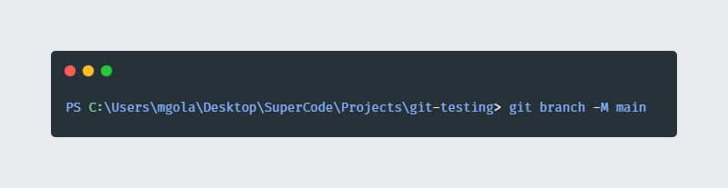

Git with GitHub
Git is a free and open source distributed version control system designed to handle everything from
small to very large projects with speed and efficiency.
Git is easy to learn and has a tiny footprint with lightning fast performance. It outclasses SCM
tools like Subversion, CVS, Perforce, and ClearCase with features like cheap local branching,
convenient staging areas, and multiple workflows.
git init
git-init - Create an empty Git repository or reinitialize an existing one
git status
git-status - Show the working tree status
git add
git-add - Add file contents to the index
git commit
git-commit - Record changes to the repository
git branch
With a -m or -M option, "oldbranch" will be renamed to "newbranch". If "oldbranch" had a
corresponding reflog, it is renamed to match "newbranch", and a reflog entry is created to remember
the branch renaming. If "newbranch" exists, -M must be used to force the rename to happen.

git remote add
Add a remote named "name" for the repository at "url". The command git fetch "name" can then be used
to create and update remote-tracking branches "name"/"branch".
git push
git-push - Update remote refs along with associated objects.Updates remote refs using local refs,
while sending
objects necessary to complete the given refs.
You can make interesting things happen to a repository every time you push into it, by setting up
hooks there.